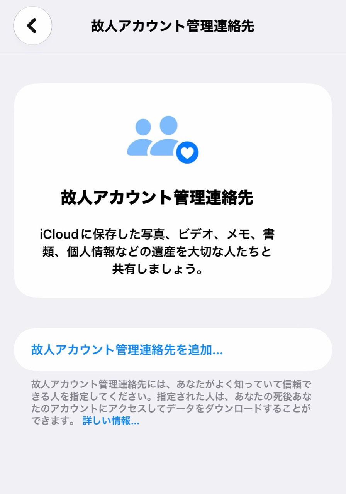

家族が亡くなり、iPhoneが手元に残ったとき。「写真を見たいけれど、パスコードが分からない」「初期化すれば家族が使えるのだろうか」と悩むことがあります。
iPhoneには、端末を守るための複数のロックがあります。端末を再利用することと、写真などのデータを引き継ぐことでは、必要な手続きが違います。万が一のときに備えて、今から設定できる「故人アカウント管理連絡先」とあわせてご紹介します。
まず確認したいのは「端末」と「データ」
故人のiPhoneについて考えるときは、次の二つを分けると分かりやすくなります。
- iPhone本体を初期化して、家族が使えるようにしたい
- iCloudに保存された写真やメモなどを残したい
写真などが必要な場合は、手続きが分かるまで端末の初期化やApple Accountの削除を急がないでください。
初期化しても使えないことがあるのはなぜ？
iPhoneには、画面を開くための「パスコード」と、Apple Account（旧Apple ID）に端末を結び付ける「アクティベーションロック」があります。
「iPhoneを探す」がオンになると、アクティベーションロックも有効になります。これは、紛失したiPhoneを第三者が拾い、初期化して自分の端末として使うことを防ぐための仕組みです。
そのため、端末を強制的に初期化しても、故人のApple Accountとの結び付きが残っていれば、初期設定の途中でロックがかかることがあります。初期化だけでは解決しません。
故人のiPhoneを家族が再利用するには？
状況に応じて、Appleの正式な手続きが必要です。
生前に「故人アカウント管理連絡先」に指定されていた方は、アクセスキーと必要書類を使ってAppleに申請できます。申請が承認されると、故人のApple Accountを使用していた端末のアクティベーションロックは解除されます。
指定されていない場合でも、故人のApple Accountと必要な法的書類を用意し、アカウントとデータの削除を申請する方法があります。承認されればアクティベーションロックは解除されますが、アカウント内のデータも削除されるため、写真などを残したい方は申請前にAppleサポートへ相談してください。
また、端末の購入証明書がある場合には、Appleへアクティベーションロック解除のサポートを申請できます。いずれも、申請すれば必ず解除されると約束できるものではありません。
Apple Storeに端末を持ち込むだけで、その場でロックを解除できるわけでもありません。必要な手続きはAppleの案内に従って確認してください。
パスコードが分からない場合、写真は取り出せる？
アクティベーションロックが解除されても、画面のパスコードまで解除されるわけではありません。Appleは、パスコードで保護された端末を消去せずにロック解除することはできないと案内しています。故人のiPhoneを別のApple Accountで使うには、端末を消去・復元する必要があります。
ただし、端末を開けないことと、iCloud上のデータを確認できないことは同じではありません。故人アカウント管理連絡先としてAppleの審査を受け、アクセスが承認されれば、対象となるiCloudの写真、メモ、ファイル、バックアップなどにアクセスできます。
故人アカウント管理連絡先の設定は、端末内だけに保存されたデータのパスコードを解除する機能ではありません。普段から大切な写真などの保存・バックアップ状況も確認しておくと安心です。
写真を家族に残すための「故人アカウント管理連絡先」

タップすると画像を拡大できます。
故人アカウント管理連絡先は、自分が亡くなった後、信頼できる人がApple Accountに保管された対象データへアクセスできるようにしておく設定です。
iPhoneでは、次の順に設定できます。
- 「設定」→「自分の名前」→「サインインとセキュリティ」→「故人アカウント管理連絡先」を開く
- 「故人アカウント管理連絡先を追加」をタップし、信頼できる家族などを指定する
- 発行されたアクセスキーを相手に共有する。iMessageで送るか、控えを印刷して渡す方法がある
相手はApple製デバイスを持っていなくても指定できます。大切なのは、アクセスキーを相手が受け取れたか確認しておくことです。
万が一の際には、指定された方がアクセスキーと必要書類を用意してAppleに申請します。日本では、故人の死亡の記載がある戸籍謄本が必要になる場合があります。Appleの審査後、専用のApple Accountで対象データを確認できます。
ただし、購入した映画・音楽や、iCloudキーチェーンに保存されたパスワードなどは引き継げません。また、専用アカウントにアクセスできる期間は、Appleが最初の申請を承認してから3年間です。
まとめ
故人のiPhoneは、初期化するだけで家族が使えるとは限りません。また、端末を再利用するための手続きと、写真などのデータを残すための手続きは異なります。
大切な写真を家族に残したい方は、元気なうちに「故人アカウント管理連絡先」を設定し、アクセスキーを共有しておきましょう。
Repair540では、端末に表示されているロックの種類や、端末の状態についてのご相談を承ります。Apple Accountやアクティベーションロックの解除申請は、Appleの公式手続きで行ってください。